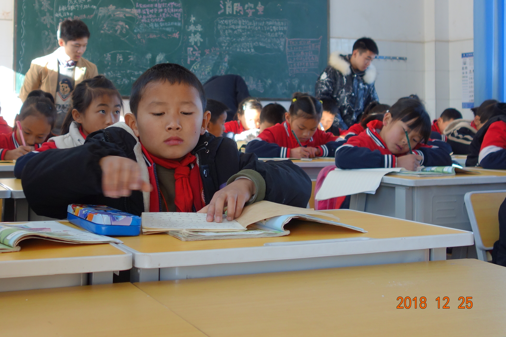
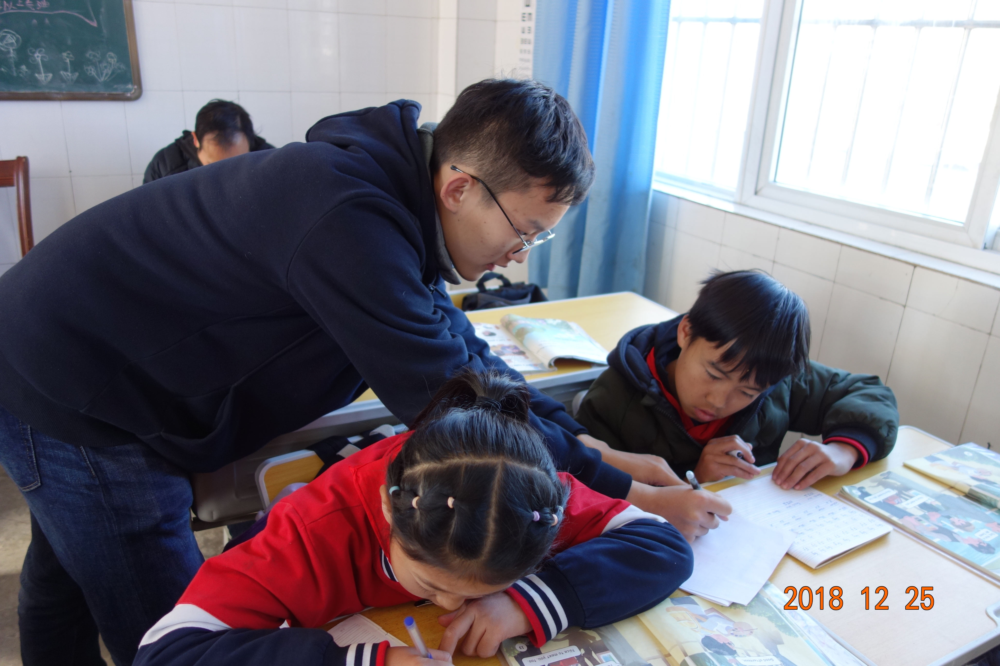
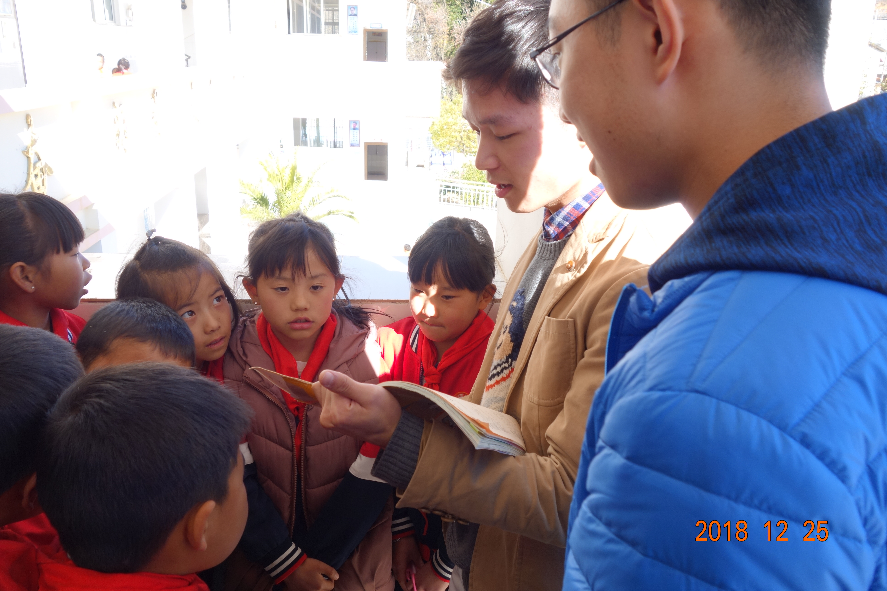
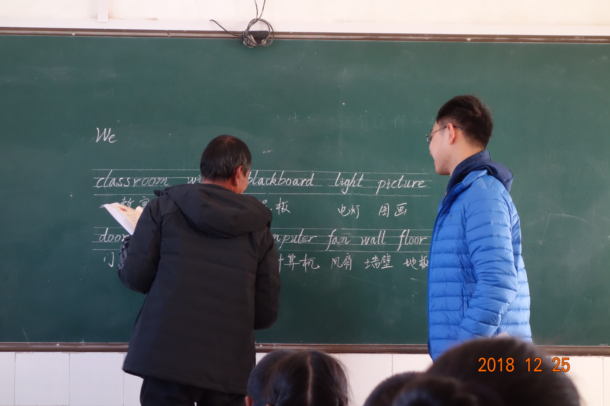

In winter 2019, I worked as a volunteer teacher to help improve English education at Er Yuan. We taught demonstration English lessons in three elementary schools and held lecture on phonetic symbols to all primary school English Teachers in the county. We even designed Er Yuan English midterm and final exam papers. I was chosen to record the listening section of the county's English exams. That semester, Er Yuan County saw its students' English scores raised from average 63 in midterm to 79 in final.
   